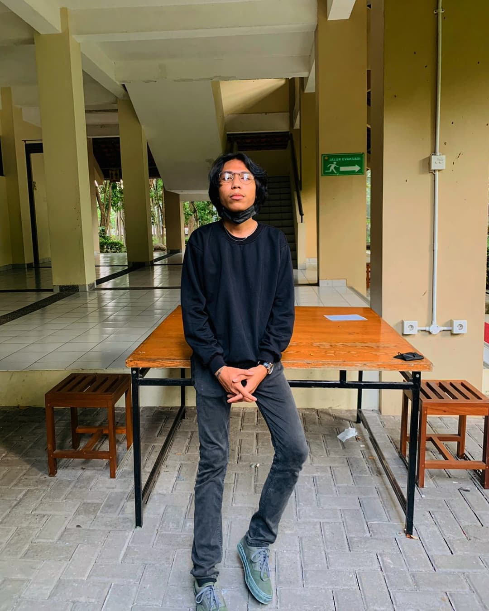

Curriculum Vitae

DATA PRIBADI
Nama : Justino Ardian Suban
Tempat, Tanggal Lahir : Pangkalan Bun, 3 Maret 2002
Jenis Kelamin : Laki - laki
Agama : Katolik
Tinggi Badan : 170 cm
Berat Badan : 49 Kg
Alamat : Jl. Paingan No. 4 Maguwoharjo, Sleman, Jogjakarta
No, Handphone : 0858-4924-6511
Status : Mahasiswa
Alamat E-mail : ardiantino19@gmail.com
DATA PENDIDIKAN
Sekolah Dasar : SDS Santa Maria Pangkalan Bun, Kalimantan Tengah
Sekolah Menengah Pertama : SMP Negeri 11 Pangakalan Bun, Kalimantan Tengah
Sekolah Menengah Atas : SMK Negeri 1 Pangkalan Bun, Kalimantan Tengah
Perguruan Negeri : Universitas Sanata Dharma Jogjakarta
PENGALAMAN ORGANISASI
Ketua Kegiatan Porsi Prodi Informatika
Kepada Departmen Minat Bakat Kegiatan Himpunan Prodi Informatika